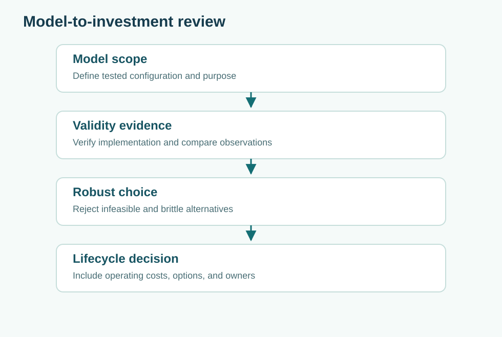

Simulation credibility: verification, validation, and decision relevance
Core Concepts · Quantitative methods · T19
Distinguish correct code from a credible model and trace uncertainty from inputs to decisions.
Recommended preparation: 04 Model Semantics, 06 Inference
Related companion books: Book 11, Book 12, Book 16

1. A simulation is an argument with executable assumptions
A simulation may be numerically precise and still poorly suited to the decision it is used to support. Before running Northstar's fleet model, define its intended use: selecting an initial capacity for a classroom design exercise is different from authorizing emergency mobility service. The first might tolerate simplified travel times; the second would require evidence about routes, access constraints, traffic conditions, human operations, cyber failures, and the consequences of missed service.
The central question is not “Does the model work?” but “What claim can this version of the model, with this evidence, support in this context?” Document the model scope, outputs, domain of applicability, data sources, configuration, uncertainties, and exclusions. A single credibility grade applied without reference to a decision is not very informative.
2. Separate verification, validation, and calibration
Code verification asks whether an implementation correctly solves its specified equations or rules. In a queue model, event times should be ordered consistently, queue lengths must not become negative, and total completed plus rejected plus pending requests should reconcile to total arrivals. Tests can use tiny analytically solvable examples and property-based checks.
Model validation asks whether the chosen model adequately represents the relevant real-world processes for its intended use. A correct M/M/1 implementation may be inappropriate for scheduled route departures, capacity-limited vehicles, and correlated trip times. Calibration tunes parameters using data; good fit after tuning does not independently validate the model. Hold out observations, compare behavior over relevant regimes, and analyze why the model fails where it does.
These are different activities. A model may pass every software unit test yet fail to predict a critical traffic-surge pattern. Conversely, fitting a dataset closely does not show that event-ordering logic is correct.
3. Use conservation and invariants as independent checks
Suppose an event simulation records $N_a$ arrivals, $N_c$ completed, $N_r$ rejected, and $N_p$ still pending at the observation horizon. A fundamental accounting invariant is
provided the categories are mutually exclusive and exhaustive. If the model reports 100 arrivals, 80 completions, 15 rejections, and 10 pending, it violates this invariant. The failure may stem from duplicate handling or a reporting bug. It is not fixed by adding more random replications.
Other useful properties include nonnegative vehicle availability, monotonically increasing event timestamps, unique request identifiers, and bounded state transitions. Independent checks are strongest when implemented differently from the logic being tested.
4. Understand input, parameter, structural, and numerical uncertainty
An input distribution can be estimated with error; a service-rate parameter can vary across contexts; the structural model may omit rerouting behavior; and a numerical solver can introduce time-step error. Increasing the Monte Carlo replication count reduces simulation sampling noise. It does not repair any of these other uncertainties.
Separate outer-loop parameter scenarios from inner-loop stochastic replications. For example, evaluate three plausible demand-generation models and run independent replications within each. Report a range of results across models plus the Monte Carlo uncertainty within each model. Pooling all runs into one narrow interval would imply unjustified confidence about the demand model itself.
5. Validate against more than one summary statistic
A model that matches average trip duration may still misrepresent tails and failures. Compare empirical distributions, outage recovery patterns, burst sizes, spatial clustering, and service-denial fractions. A global fit score can hide a poor model for the exact conditions the engineering board cares about.
Use residual analysis to look for structure: systematic errors during peak periods, weather-related bias, differences by service area, or drift after a software revision. Hold out both time periods and scenarios when possible. If field data are unavailable because the system is novel, use expert elicitation, analogous systems, first-principles bounds, and stress cases—clearly marking the weaker support.
6. Worked case: an apparently excellent simulation
Northstar predicts an average wait of 14 minutes, while a small observed sample averages 14.2. The 0.2-minute difference looks reassuring. Yet the model excludes rejected rides and calculates wait only for completed service. During demand peaks, 20% of requests are dropped, while the real performance objective concerns all requests. The “validation” comparison targets the wrong quantity. Redefine the outcome: completion fraction, wait conditional on service, time to failure or rejection, and emergency subgroup performance.
In a second check, the model produces 20% more completed requests than arrivals. This is not a modeling judgment call; it is an accounting defect. Fix it before performing any statistical comparison. Only after structural and implementation checks should confidence intervals inform a decision.
7. Make the model reproducible and reviewable
Record version identifiers for code, configuration, datasets, random seeds, assumptions, verification results, validation comparisons, and analysis scripts. A screenshot of a plot cannot establish provenance. A reviewer should be able to rerun a representative case and inspect how each plotted value was produced. Preserve failed runs and discrepancy records; silently deleting them biases the evidence.
An appropriate release statement might read: “Model R-6 is suitable for comparing relative fleet-capacity effects under synthetic weekday demand streams in scenarios S1–S8; it is not validated for emergency weather, road closures, or safety authorization.” This is a useful engineering artifact because it states what the model is—and is not—allowed to claim.
Practice questions
A. Classify an event-ordering bug, a wrongly chosen demand distribution, and a tuned service-rate parameter as verification, validation, or calibration issues. B. Find the accounting discrepancy in the example. C. Draft a bounded model-use statement for a capacity trade study.
Answer guidance
Event ordering is implementation verification; an unrepresentative distribution is validation/model adequacy; choosing a fitted rate is calibration. The example overcounts completed requests relative to arrivals. A good use statement names the demand domain, decision, version, validated outputs, and untested conditions.
Further connections
Model semantics, statistical inference, and experimental design are prerequisites. Book 12 adds advanced numerical modeling methods, while Book 8 develops formal test evidence.